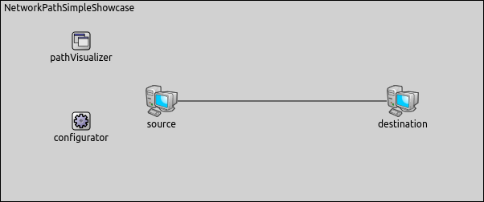
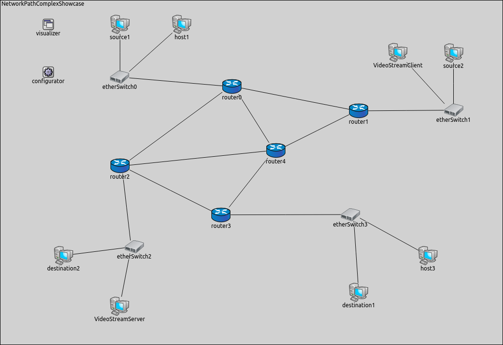

In complex networks, it is difficult to trace the packets' network path activity from the source to the destination, because there are a lot of simultaneous communication and we have to pay attention to more than one message at the same time. Network topology changes, e.g a router goes offline, also have an effect on the packets' path. It would be useful to be able to observe packets that pass through network layer (i.e. carry data from/to higher layers) to follow network path activity between nodes.
INET provides a visualizer, that shows between which nodes there is network path activity. If network path activity is visualized between two nodes that means the observed packet passes through the network layer of the receiver node. By using the network path activity visualization we can identify any certain packet's layer 3 path.
The showcase consists of four simulation models, each demonstrating different features of network path activity visualization.
INET version: 3.6
Source files location: inet/showcases/visualization/networkpathactivity
In INET, network path activity can be visualized by including a NetworkRouteVisualizer module in the simulation. Adding an IntegratedVisualizer module is also an option, because it also contains a NetworkRouteVisualizer module. Network path activity visualization is disabled by default, it can be enabled by setting the visualizer's displayRoutes parameter to true.
NetworkRouteVisualizer currently observes packets that pass through the network layer (i.e. carry data from/to higher layers), but not those that are internal to the operation of the network layer protocol. That is, packets such as ARP, although potentially useful, will not trigger the visualization. Visualizing such packets may be implemented in future INET revisions.
The activity between two nodes is represented visually by a polyline arrow which points from the source node to the destination node. NetworkRouteVisualizer follows packets throughout their path so that the polyline arrow goes through all nodes which are the part of the network path of packets. The arrow appears after the first packet has been received, then gradually fades out unless it is refreshed by further packets. Color, fading time and other graphical properties can be changed with parameters of the visualizer.
By default, all packets, interfaces and nodes are considered for the visualization. This selection can be narrowed with the visualizer's packetFilter and nodeFilter parameters.
The following example shows how to enable the network path visualization with its default settings. In the first example, we configure a simulation for a wired network. This simulation can be run by choosing the EnablingVisualization configuration from the ini file.
The network contains two StandardHosts (source and destination). The linkVisualizer's type is NetworkRouteVisualizer. In this configuration, the source node pings the destination node.
The network path activity visualization is enabled by setting the displayRoutes parameter to true:
The following animation shows what happens when we start the simulation:
At the beginning of the video, a red strip appears and moves from source to destination. This strip is the standard OMNeT++ animation for packet transmissions, and has nothing to do with NetworkRouteVisualizer. When the packet is received in whole by destination (the red strip disappears), an arrow is added by NetworkRouteVisualizer between the two hosts, indicating network path activity. The packet's name is also displayed on the arrow. The arrow fades out quickly, because the fadeOutTime parameter of the visualizer is set to a small value.
Note, however, that ARP traffic does not activate the visualization, because the ARP packets do not pass through network layer.
In complex networks with many nodes and several protocols in use, it is often useful to be able to filter network traffic, and visualize only the part of the traffic we are interested in.
The following example shows how to set packet filtering in NetworkRouteVisualizer. This simulation can be run by choosing the StaticNetworkPaths configuration from the ini file.
We use the following network for this showcase:
The network consists of five routers (router0..router4), four etherSwitches (etherSwitch0..etherSwitch3) and eight StandardHosts. There are two source hosts, source1 and source2, which ping the two destination hosts (destination1 and destination2). There is a videoStreamServer node and a videoStreamClient node. VideoStreamClient sends one "video streaming request" to videoStreamServer. When the request arrives, videoStreamServer starts streaming to videoStreamClient.
For this network, the visualizer's type is IntegratedVisualizer. Network path visualization is filtered to display only ping traffic. We adjust the fadeOutMode and the fadeOutTime parameters, so the network path activity arrow does not fade out completely before the next ping packet arrives.
The following video depicts what happens, when we start the simulation:
Each arrow has a different color indicating different paths. You can see that although there is both video streaming and ping traffic in the network, NetworkRouteVisualizer only displays the latter, due to the presence of the packetFilter parameter.
The following simulation shows how visualization can help you to follow dynamically changing network path activity in a wireless environment. This simulation can be run by choosing the Mobile configuration from the ini file.
The network contains seven mobile nodes which are placed randomly. One of the nodes is the source node which pings the destination node.

Nodes are of the type AODVRouter, and are placed randomly on the playground. The communication range of the nodes is chosen so that the network is connected, but nodes can typically only communicate by using multi-hop paths. The nodes will also randomly roam within predefined borders. The routing protocol is AODV.
In this simulation, AODV works as follows:
As long as source has a valid route towards destination or source is not pinging destination, AODV is inactive.
When a new route is needed towards destination, source starts to flood the network with AODV route request (RREQ) messages.
RREQ messages propagate through the intermediate nodes until one of them reaches the destination node.
The route is made available by unicasting AODV route reply (RREP) messages back to the originator of the RREQ messages.
(You can see this process in the Data Link Activity showcase, in the Visualizing Data Link Activity in a Mobile Ad-Hoc Network configuration.)
We use the following configuration for the visualization:
The following video shows what happens when the simulation is run:
The communication ranges of source and destination are visualized as blue circles.
The video clearly shows the path ping packets are taking between source and destination. Ping packets are forwarded to the next hop until they reach the destination. The network path activity is visualized after the ping packet has arrived to destination so that we get information about the path changes immediately.
When the existing route breaks due to two nodes drifting away (out of the communication range of each other), this manifests as link-level failure (ACK frames do not arrive). This condition is detected by AODV and it starts searching for a new route. When the new route is found, the ping traffic resumes.
We can observe in the video that the route the ping packets take is not always optimal (in terms of hop count). The reason is that nodes use an existing route as long as possible, even when a shorter route becomes available as a result of node movement. AODV is only activated when the existing route breaks.
This configuration demonstrates how the visualizer reacts to the routing changes in a complex network. This simulation can be run by choosing the ChangingPaths configuration from the ini file.
The network contains four routers (router0..router3) which are placed and connected so as to create redundant paths. There are a wired and a wireless source-destination pair and two other hosts which are inactive in this simulation. The wired nodes are connected to the routers via etherSwitches, the wireless nodes are connected to the routers via accesPoints. WiredSource pings wiredDestination and wirelessSource pings wirelessDestination.

We assign IP addresses manually by creating an xml configuration file. A lifecycle is created for this configuration to turn off and on the routers at a given time. RIP is used for this configuration, so the network paths change dynamically between the source nodes and the destination nodes when the topology changes.
In this showcase, we set the packetFilter parameter to display only ping echo traffic. We use the following configuration for the visualization:
Here is what happens, when the simulation is run:
In the beginning of the simulation, ping traffic goes towards router1. After five seconds, little ???gears/cogwheels??? appear above router1 and after that ???gears/cogwheels??? change to a red cross. The red cross indicates router1 went offline so that ping echo traffic needs new network path towards the destination nodes. As a result of this, the routers update their routing tables based on RIP routing informations and ping traffic goes towards router3. While ping traffic goes towards router3, router1 turns on again (the red cross disappears). After a few seconds the router3 goes offline. Routing tables are updated based on RIP routing informations and as a result of this, ping echo traffic goes towards router1 again.
This example only demonstrated the key features of network path visualization. For more information, refer to the NetworkRouteVisualizer NED documentation.